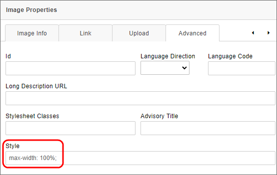
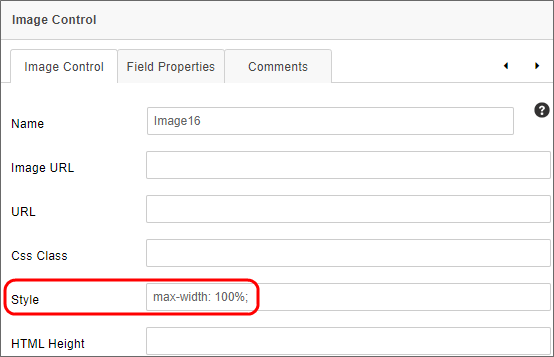
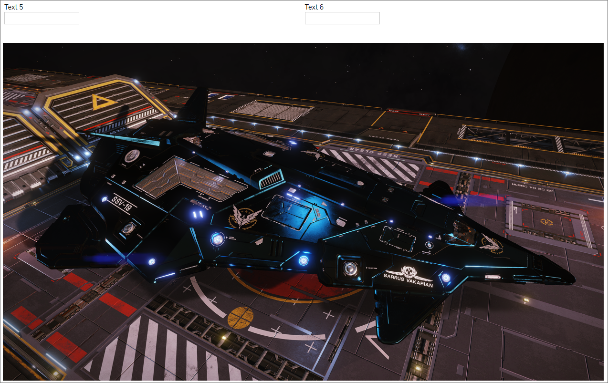
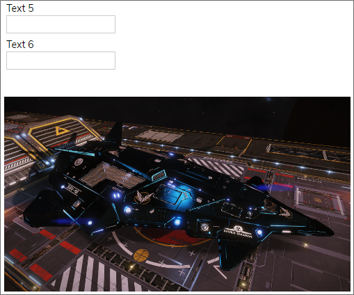

This principle relates to making information and user interface components presentable to users in ways they can perceive.
In the context of a Process Director form or Dashboard, this requirement is primarily applicable to the use of images, including logos and other branding images. Image controls in Process Director's Online Form Designer contain an Alternative Text property. This property should be used to provide descriptive text for all images you display on forms.
Similarly, Button controls have an Alt Text property that you should use to provide descriptive text to buttons that only present images or icons.
All data entry controls should have a Label control associated with them. In the properties dialog of the Label control, the Associated Control ID property should contain the Name of the control to which the Label is associated. For instance, if you have an Input control with the Name "FirstName", the Associated Control ID of the Label would be "FirstName". Label controls also have an Alt Tag property to provide the required text alternative to the Text property of the Label. When using tables, the Label control should be placed in the same table cell as the data entry control to which it is associated, to make it easier for assistive devices to understand the relationship between the two controls on the page.
Tables have a Caption property to provide text-based table descriptions in the Table Properties dialog box. Additionally, a Summary property provides a text representation of the table's purpose or brief description of the data it contains.
This isn't generally relevant to Process Director, as forms don't display video or audio presentations.
You should use tables to present tabular data, and use the appropriate table headers. When doing so, Process Director's Online Form Designer will automatically insert the appropriate table, th, tr, td, etc., tags. You can specify the headers as the first row, first column, or both, using the Headers property of the Table's properties Dialog. Additionally, the Cell Properties dialog box has a Cell Type property you can use to specify if a table is a data or header cell.
Process Director automatically provides the HTML "scope" attribute for headers to associate header cells and data cells in data tables.
This isn't generally relevant to Process Director.
You should always provide textual identification of items that otherwise rely only on sensory information to be understood. In other words, image-only buttons, images used as buttons, or other UI conventions should always provide a textual identification in addition to the sensory-based convention, e.g., using explicit text labels for buttons, in addition to images or icons, where possible. There are exceptions when space constraints may not allow the use of such explicit text, in which case you must use the Alt Text property of the object to ensure a text alternative is always available for it.
As a best practice, you shouldn't fix widths for layout elements if doing so isn't essential. By default, for example, the default width of tables in the Online Form Designer is 100%, which enables them to scale to the screen width of the viewport. You shouldn't impose a specific screen size or viewport on your users, or attempt to replicate the exact layout of a printed form. Users who require a larger font, for example, may find such forms more difficult to read or use because of the layout restrictions you've imposed.
As a best practice, all input fields should have logical, recognizable Name properties that reflect the type of data being collected by the input control, rather than use among conventions that make sense only to developers or other IT personnel. For instance, "FirstName" tells you fairly specifically what the purpose of the input control is, while "frm11a_txt_fname" is substantially more opaque.
As a best practice, any information conveyed by color differences should also be available in text. Use of color cues alone to display a status, or prompt a response isn't an acceptable accessibility practice. Color should be an enhancement to, and not the primary method of, communication.
This is generally not relevant to Process Director.
As a best practice, text should be easily distinguishable from any background colors or images through the use of highly contrasting colors. Without sufficient contrast such text will be difficult for to read by users who are visually impaired. The WCAG specification links to a number of web-based tools that are available online for analyzing color contrasts to ensure that your design meets the required contrast ratios. In addition, we've provided a set of sample colors you might want to consider for creating the appropriate contrasts with white or black text, for use with UI elements like buttons.
Most modern web browsers have 200%+ text resizing built in. As a form designer, you should remember that the text size in which you are designing the form may not be the size in which your users are viewing it. As a best practice, you should view your form at different text sizes, up to 200%, to ensure that the layout and usability of your form remains intact at high zoom levels. This also relates to the best practice identified for WCAG specification 1.3.4, above, as this requirement affect the proposed layout of your form at high magnifications.
As a best practice, use text, rather than images of text, wherever possible.
Though there are some minor exceptions to this requirement in the WCAG 1.4.10 standard in general, you should ensure that your users don't have to scroll in more than one dimension, i.e., vertical scrolling alone is acceptable, as is horizontal scrolling alone, but requiring users to scroll both vertically and horizontally isn't acceptable. (As a best practice, horizontal scrolling should be eliminated entirely if it is possible to do so.)
When using installations with the mobile device component, Process Director will automatically reflow content, such as tables, to ensure it fits within smaller viewports without having to scroll horizontally. Otherwise, some relatively simple CSS styling applied to the form in the Properties tab of the Form Definition can accomplish the same refactoring to control the reflow of a table. A sample of this sort of reflow CSS is provided below.
@media
only screen and (max-width: 860px),
(min-device-width: 860px) and (max-device-width: 1024px) {
/* Force table to not be like tables anymore */
table, thead, tbody, th, td, tr {
display: block;
}
/* Hide table headers (but not display: none;, for accessibility) */
thead tr {
position: absolute;
top: -9999px;
left: -9999px;
}
tr {
border-top: 1px solid #eeeeee;
margin-top:10px;
}
}
For many UI elements, such as tables, or controls like the Section control, Process Director sets the default Width of the element to 100% of screen width automatically. In most use cases, this ensures that the element fills the screen horizontally, but doesn't extend beyond the screen's width. Images, however, can be particularly troublesome in this regard, since an image that displays well on a desktop screen may be too wide to display properly on a table or phone. These large images will push the effective screen width beyond the horizontal size of the screen, which will also force the vertical size of other elements off the edge of the screen. You may wish to set the CSS style for images (i.e., the img element, to a max-width of 100% to ensure that, as screen widths change, the image never extends beyond the screen's width. This CSS style forces the width of the element to always be no larger than 100% of screen width, and enforces this setting by forcing the image to resize to the screen width when the screen is resized. This style can easily be applied in the Image control's properties by adding this style setting to the image in the Style property.
For the standard Image control, the Style property can be found on the Advanced tab of the Properties dialog box for the control.

For the BP Logix-specific Image control that's accessed via the Other Controls menu, the Style property is displayed on the Image Control tab of it's Properties dialog box.

Once set, the image will always display properly, as shown in the examples below.
Wide Screens:

Narrow Screens:

As a best practice, and as with the text contrast requirements of 1.4.3, above, user interface components and other graphical object must have a relatively high contrast. For example, a button with blue text and a slightly darker blue background might look nice, but will probably not have enough contrast between the button's background color and text to meet the requirements of this specification. In Process Director, button background, text, and icon colors can all be specified b the designer, so ensure that the color contrasts are large enough for visually impaired users to easily differentiate between them. Again refer to the contrast analyzer tools linked in 1.4.3, above.
Though this is generally not relevant to Process Director, you should, as a best practice, not make the organization or presentation of information dependent on line, letter, or paragraph spacing. This is also a layout consideration that affects the requirements of both 1.3.4, and 1.4.4, above.
While not generally relevant to Process Director in the specific context of a mouseover or hover action, there are times when you want information to appear or disappear based on the value of some evaluable condition, or when you select a control. Process Director provides both Section and Embedded Section controls that enable you to hide or reveal form areas. When shown, these sections are persistent until the condition changes or it is hidden manually. Also, this hiding or displaying of information is generally done via events other than mouseover, in order to provide both persistence, and user-level manual control over when the information is hidden or displayed. As a general rule, attempting to show or hide information based on the position of the mouse isn't a good practice.
Principle 2 - Operable: This principle relates to how user interface components and navigation operate.
Principle 3 - Understandable: This principle relates to making information and the operation of the user interface understandable to users.
Principle 4 - Robust: This principle relates to making content robust enough to be interpreted by a wide variety of user agents, including assistive technologies.